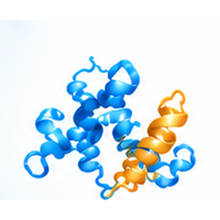
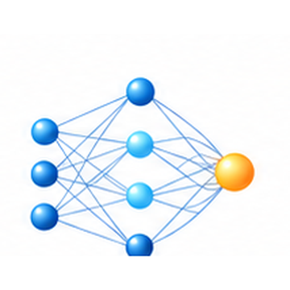
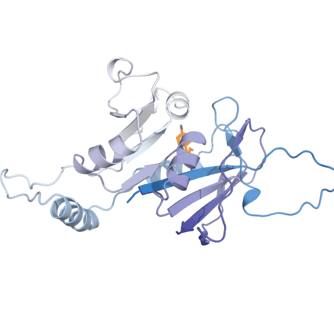
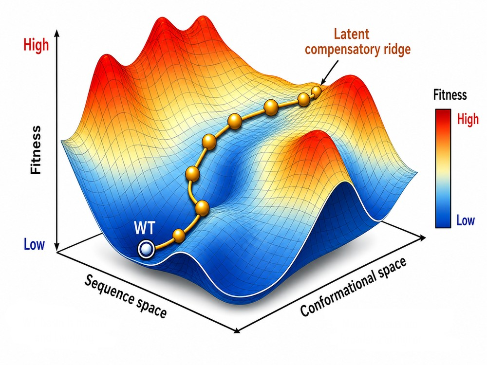
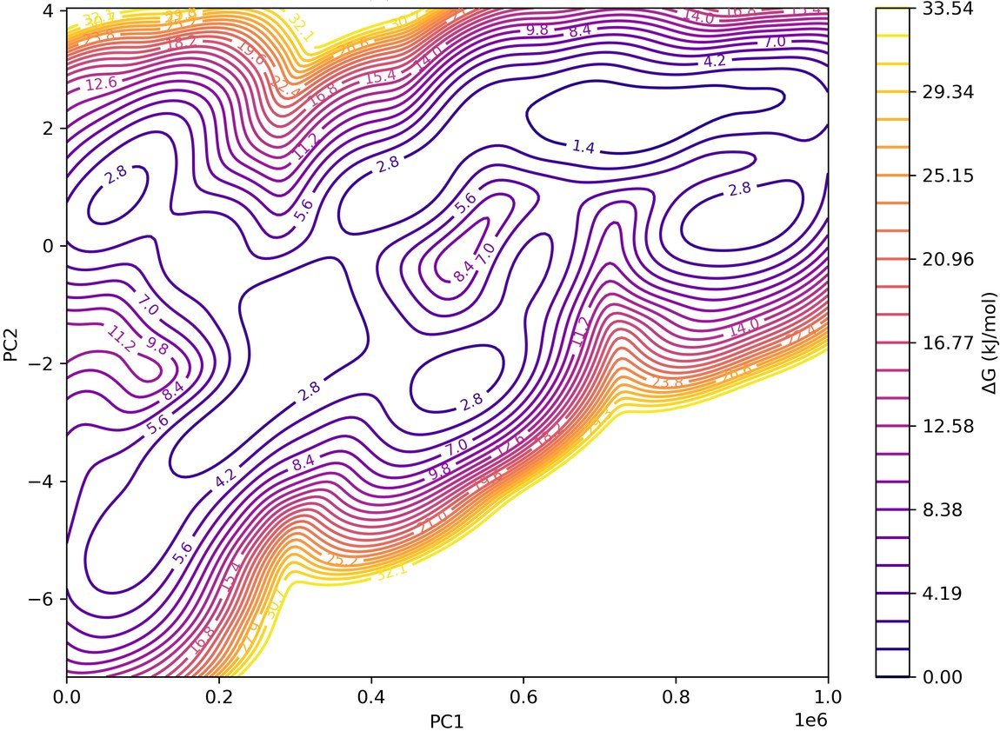
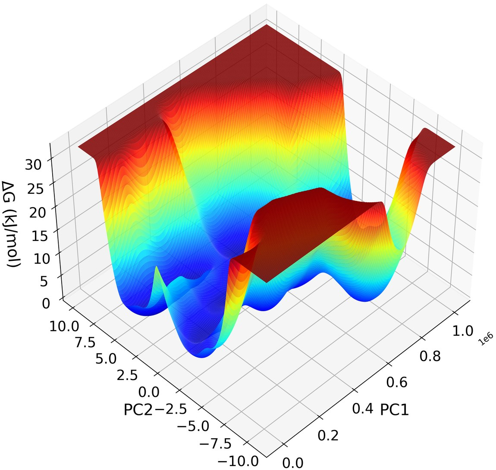
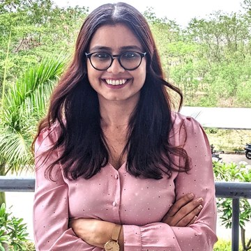

Flagship preprint on bioRxiv
"Epistatic Network Constraints Shape Predictable Antifolate Resistance in Plasmodium falciparum Dihydrofolate Reductase," submitted to npj Antimicrobials and Resistance.
Biomedical Data Scientist · Computational Biologist · Bioinformatician
Dept. of Biological Sciences & Dept. of CSIS, BITS Pilani Hyderabad Campus
I study how proteins evolve under selective pressure — mapping the fitness landscapes behind antimicrobial resistance by combining structural biology, molecular dynamics, graph-based machine learning, and reinforcement learning.
I am a biomedical data scientist with about three years of interdisciplinary research experience spanning infectious diseases, molecular biology, bioinformatics, and computational biology. My work has evolved from molecular epidemiology and phylogenetic analysis of pathogens toward questions in protein evolution, structural biology, and antimicrobial resistance — involving sequence analysis, molecular modelling, molecular dynamics, and biological network analysis. I have also explored graph-based machine learning for protein–ligand interactions and reinforcement learning for adaptive evolution. I'm interested in building on this foundation through comparative genomics, multi-omics, and data-driven approaches that connect biological questions with computational method development.
This research is carried out at BITS Pilani, Hyderabad Campus, in the laboratory of Dr. Sourav Chowdhury (Dept. of Biological Sciences, Evolutionary Systems Biophysics), with a parallel collaboration in the laboratory of Dr. Prajna D. Upadhyay (Dept. of CSIS, Machine Learning & AI for Computational Biology).
Originally from Lusaka, Zambia — currently based in Hyderabad, India.
Selected milestones from my work on protein evolution, structural biology, and machine learning for antimicrobial resistance.
"Epistatic Network Constraints Shape Predictable Antifolate Resistance in Plasmodium falciparum Dihydrofolate Reductase," submitted to npj Antimicrobials and Resistance.
A preclinical MUC1-C–targeted antibody-drug conjugate study in pancreatic cancer, under review at Molecular Cancer Therapeutics.
A study on the insecticidal effectiveness of nicotine against Anopheles mosquitoes, under review at Malaria Journal.
Co-authored work mapping dihydropteroate synthase evolvability, published in the International Journal of Biological Macromolecules.
Co-authored structural insight into MUC1-C/ED mutations for antibody-drug conjugate design, published in Biochemical and Biophysical Research Communications.
Presented research on machine-learning applications in drug-resistance modelling at the 6th Indian Symposium on Machine Learning.
Five complementary lenses on one underlying question — how proteins evolve, fold, and interact — that together shape every project below.

Sequence, structure, and function — how mutations reshape a protein's behaviour.
Molecular dynamics and structural modelling of drug targets and their resistance mutants.
Residue interaction networks and genotype graphs that reveal epistatic structure.

Graph neural networks and reinforcement learning applied to evolutionary and structural data.
Structure-based virtual screening translating these insights into candidate therapeutics.

A population evolving across sequence space doesn't take a direct route to higher fitness — epistasis carves the landscape into ridges and valleys, and an adaptive walk from wild type is channelled along a narrow set of accessible, compensatory trajectories rather than the shortest path uphill.



Google Scholar (April 2026): 23 citations · h-index 2 · i10-index 1 · cumulative impact factor 13.7 · full list on Google Scholar · † first/co-first author · * corresponding author
bioRxiv, 2026.01.04.697492 (2026) · submitted to npj Antimicrobials and Resistance
bioRxivCambridge University Press — Public Humanities: Antimicrobial Resistance — Just Transitions for Shared Futures (2026)
Under review, Malaria Journal · IF 3.0
Under review, Molecular Cancer Therapeutics · IF 6.9
International Journal of Biological Macromolecules 311, 143325 (2025) · IF 7.7
Project OverviewBiochemical and Biophysical Research Communications 775, 152114 (2025) · IF 3.4
Project OverviewPLoS ONE 19(11), e0313484 (2024) · IF 2.6
In: Food Safety and Quality in the Global South, pp. 561–597 (2024), Springer, Singapore
View ChapterJournal of Educational Research on Children, Parents and Teachers (2020)
Conference talks and posters
Selected workshops & training
My research spans two groups at BITS Pilani, Hyderabad Campus — linking wet-lab and structural biophysics with computational method development.
Chowdhury Lab · Evolutionary Systems Biophysics
Structural and computational biophysics of protein evolution — fitness landscapes, epistasis, and evolvability in drug-resistance and cancer-target proteins.

Upadhyay Lab · ML & AI for Computational Biology
Machine learning and artificial intelligence methods for biological problems — reinforcement learning for adaptive evolution and graph neural networks for protein–ligand interaction prediction.
Chowdhury Lab (Dept. of Biological Sciences) & Upadhyay Lab (Dept. of CSIS), BITS Pilani Hyderabad
UNZA-ACEIDHA, School of Veterinary Medicine, Lusaka, Zambia
Arthur Davidson Children's Hospital, Kitwe, Zambia
Centre for Infectious Disease Research in Zambia (CIDRZ), Lusaka, Zambia
Wusakile Mine Hospital, Kitwe, Zambia
Teaching Assistant at BITS Pilani Hyderabad Campus
Tools and methods spanning computational biology, structural modelling, machine learning, and molecular biology.
Data Science Professional Program, OneCampus Academy — 2022
Government of India — 2019
University of Zambia — 2019
PhD Supervisor
Dept. of Biological Sciences, BITS Pilani Hyderabad Campus — Chowdhury Lab, Evolutionary Systems Biophysics
Research Collaborator
Dept. of Computer Science & Information Systems, BITS Pilani Hyderabad Campus — Upadhyay Lab, ML & AI for Computational Biology
Email:
muzatadanny@gmail.com
p20230078@hyderabad.bits-pilani.ac.in
Location:
Dept. of Biological Sciences, BITS Pilani Hyderabad Campus, India
Originally from Lusaka, Zambia